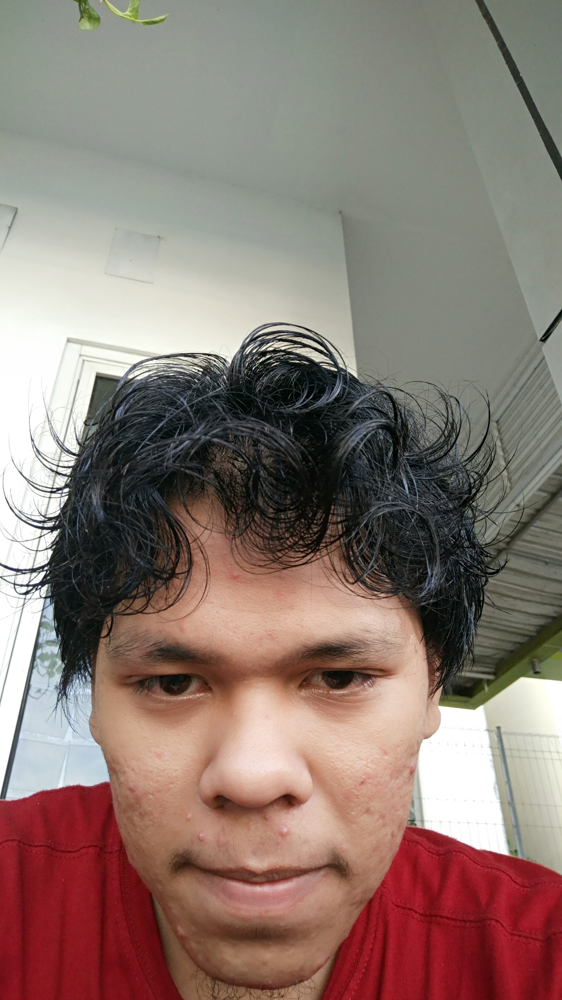
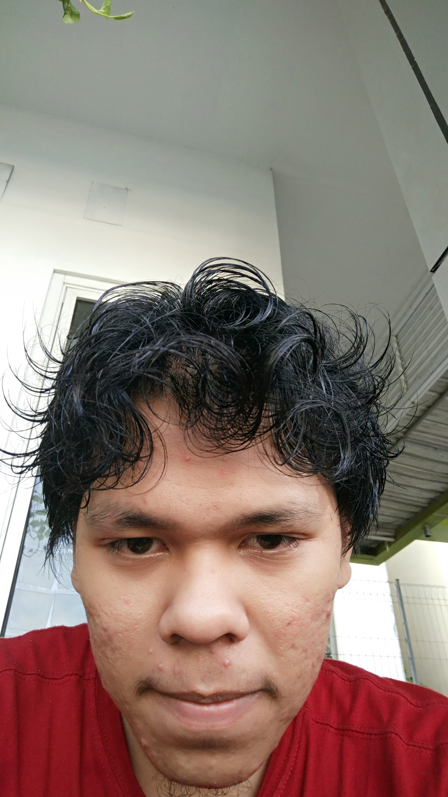

Virtual-Reality-2017
by
 
Tiartha Sitanggang - 151112416
Juang Nasution -151112637
Theresia Butarbutar - 151111488
A Bespoke.js theme

Definisi Virtual Reality
Virtual reality (VR) atau realitas
maya adalah teknologi yang membuat pengguna dapat
berinteraksi dengan suatu lingkungan yang disimulasikan oleh komputer (computer-simulated environment),
suatu lingkungan sebenarnya yang ditiru atau benar-benar suatu lingkungan yang hanya ada dalam imaginasi.
Sejarah Virtual Reality
Pada 1968, Ivan Sutherland yang juga menjabat sebagai associate professor of electrical engineering di Harvard University, dan muridnya Bob Sproull menciptakan VR/ AR dengan sistem mounted display (HMD),alat tersebut bernama the sword of democles. walaupun sangat berat alat tersebut terdapat binocular display dan head tracking, sejak saat itu semakin banyak penemuan dari berbagai ilmuwan.
1972: General Electric mengembangkan simulator komputer pertama untuk penerbangan.
1977: Sayre Gloves pertama kali didokumentasikan.
1979: Militer mulai bereksperimen dengan headset simulasi
1980: Peta interaktif virtual pertama dibuat
1981: Thomas Furnes mengembangkan “Virtual Cockpit”
1985: Pengembangan sistem praktis pertama dari viewfinder stereo
1990: Surge Sense8 ditemukan oleh Pat Gelband
1991: W. Industries membangun Virtuality, dengan headset dan kacamata untuk melihat VR kemudian muncul dalam karya-karya fiksi ilmiah seperti di film Startrek.
Elemen Virtual Reality
Virtual World
Sebuah konten yang menciptakan
dunia virtual dalam bentuk screenplay
maupun script yang merupakan komponen
utama dari Virtual Reality agar tercipta
sebuah visual virtual.
Interactivy
Yang bertugas untuk merespon aksi
dari pengguna,sehingga pengguna dapat
berinteraksi langsung dalam medan
fiktif atau virtual world
Immersion
Sebuah sensasi yang membawa
pengguna teknologi Virtual Reality
merasakan ada di sebuah lingkungan nyata yang
padahal fiktif atau virtual
Sensory Feedback
Berfungsi untuk menyampaikan informasi
dari virtual world ke indera penggunanya.
Elemen ini mencakup visual
(penglihatan), audio (pendengaran) dan sentuhan
ALat-alat Virtual Reality
Software Virtual Reality
- Virtual Reality Modeling Language (VRML)
- 3DML
- X3D
- Collaborative Design Activity (Collada)

Cara Kerja Virtual Reality
Pemakai melihat suatu dunia semu, yang sebenarnya berupa gambar-gambar yang bersifat dinamis.
Melalui perangkat headphone atau speaker, pemakai dapat mendengar suara yang realistis.
Melalui headset, glove, dan walker, semua gerakan pemakai dipantau oleh sistem dan sistem diberikan reaksi yang sesuai sehingga pemakai seolah merasakan sedang berada pada situasi yang nyata, baik secara fisik maupun psikologis.
Kelebihan Utama Virtual Reality
Powered by bespoke-bullets
- Bullet 1
- Bullet 2
- Bullet 3
Syntax Highlighting
Powered by Lea Verou's Prism
bespoke.from('article', [
classes(),
keys(),
touch(),
bullets('li, .bullet')
]);
Named Route
Powered by bespoke-hash
Look up! This route has been named with a 'data-bespoke-hash' attribute.
Emphatic Slide!
Powered by bespoke-backdrop
Just the beginning...
- Edit Jade markup in 'src/index.jade'
- Edit Stylus styles in 'src/styles/main.styl'
- Edit JavaScript in 'src/scripts/main.js'
- Enjoy! :) -@markdalgleish